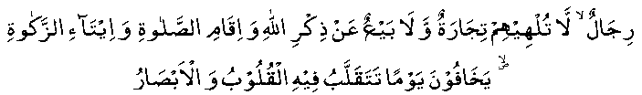
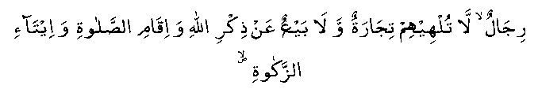

Hadhrat Abdullah bin 'Umar (RA) once visited the marketplace. He noticed that at the time of Salaah, everybody closed his shop and went to the musjid.
He remarked: "These are people about whom Allah Ta’ala has remarked:

"Men, whom neither business nor sale distracts from remembrance of Allah, and establishing Salaah and paying of Zakaat. They fear a day when hearts and eyeballs will be overturned. (ie. The Day of Qiyaamah) (SXXIV: V37)"
Hadhrat Ibn Abbas (RA) says: "These people were completely absorbed in their business, but when they heard Azaan, they left everything and rushed towards the musjid."
He once remarked: "By Allah, they were such businessmen whose trade did not stop them from the remembrance of Allah Ta’ala."
Hadhrat Abdullah bin Mas’ood (RA) once happened to be in the marketplace when the Azaan was called out. He noticed everybody leaving their shops and proceeding to the musjid.
He remarked: "These are surely the persons of whom Allah Ta’ala says:

"Men, whom neither business nor sale distracts from remembrance of Allah, and establishing Salaah and paying of Zakaat. (SXXIV: V37)"
Another Hadith says: “When all the people shall be gathered on the Day of Qiyaamah, it will be asked, 'Who are those who glorified Allah Ta’ala in good and bad times?' A group will arise and enter Jannat without any questions. Again it will be asked, 'Who are those who kept away from their beds and passed their nights in worshipping Allah.' Another group will arise and enter Jannat without any questions. The Malaaikah will ask yet again, 'Where are those whom business did not stop from remembering Allah Ta’ala', and yet another group will arise and enter Jannat without any questions. After these three groups have departed, questioning would start for the rest of the people."